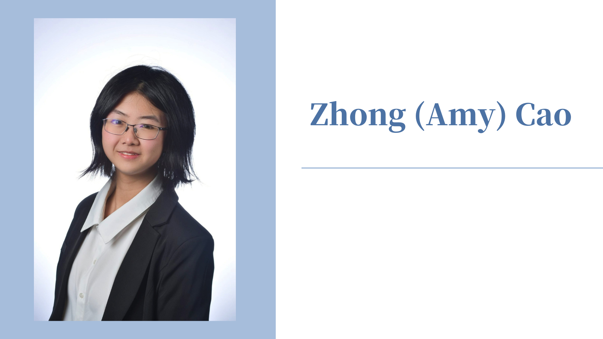

Zhong (Amy) Cao completed her Bachelor of Art Degree in the School of Educational Sciences at the University of California, Irvine (UCI) in Dec 2022.
Hey, I'm
Zhong (Amy) Cao (曹重 in Chinese). I received my Bachelor of Arts from UC Irvine and already got the offer from Human development and Education master Program in Harvard Graduate School of Education. I am interested in how personal identity and motivation affect students' performance in the face of difficulties, how to improve learning and motivation for historically minoritized and under-researched students, and how to help children in low-economic areas learn mathematics through playful learning design.
I am currently writing posters and papers for several academic conferences aimed at better understanding student-produced YouTube videos as a method for understanding the motivational beliefs of transfer engineering college students and discussing the use of surveys and videos as a method framework for assessing students' motivational beliefs' significant influence.
My CV: Zhong Cao's CV.pdf